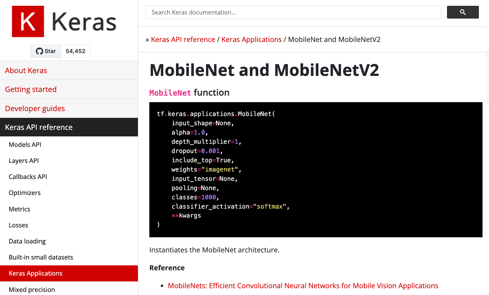
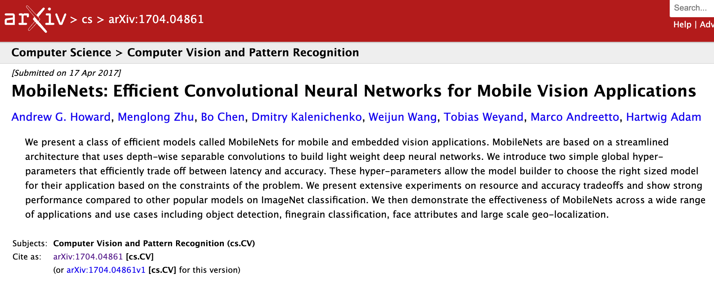
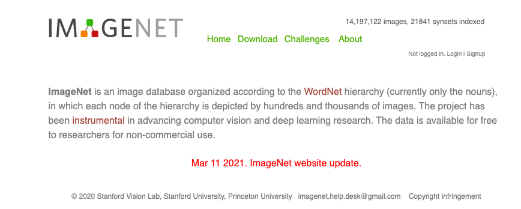

Transfer Learning y fine-tunning — 0:00 min
Última modificación: Marzo 1, 2022 | YouTube
Importación de librerías
[1]:
import os
os.environ["TF_CPP_MIN_LOG_LEVEL"] = "2"
import tensorflow as tf
Descarga de datos
[2]:
_URL = "https://storage.googleapis.com/mledu-datasets/cats_and_dogs_filtered.zip"
path_to_zip = tf.keras.utils.get_file(
"cats_and_dogs.zip",
origin=_URL,
extract=True,
cache_subdir="/tmp",
)
PATH = os.path.join(
os.path.dirname(path_to_zip),
"cats_and_dogs_filtered",
)
train_dir = os.path.join(PATH, "train")
validation_dir = os.path.join(PATH, "validation")
BATCH_SIZE = 32
IMG_SIZE = (160, 160)
[2]:
train_dataset = tf.keras.utils.image_dataset_from_directory(
train_dir,
shuffle=True,
batch_size=BATCH_SIZE,
image_size=IMG_SIZE,
)
Downloading data from https://storage.googleapis.com/mledu-datasets/cats_and_dogs_filtered.zip
68608000/68606236 [==============================] - 8s 0us/step
68616192/68606236 [==============================] - 8s 0us/step
Found 2000 files belonging to 2 classes.
[3]:
validation_dataset = tf.keras.utils.image_dataset_from_directory(
validation_dir,
shuffle=True,
batch_size=BATCH_SIZE,
image_size=IMG_SIZE,
)
Found 1000 files belonging to 2 classes.
Imágenes de ejemplo
[4]:
import matplotlib.pyplot as plt
class_names = train_dataset.class_names
plt.figure(figsize=(10, 10))
for images, labels in train_dataset.take(1):
for i in range(9):
ax = plt.subplot(3, 3, i + 1)
plt.imshow(images[i].numpy().astype("uint8"))
plt.title(class_names[labels[i]])
plt.axis("off")

Creación de un dataset de validación
[6]:
#
# Obtiene la cantidad de batches para validación
#
val_batches = tf.data.experimental.cardinality(validation_dataset)
#
# Toma el 20% para validación y el resto para test
#
test_dataset = validation_dataset.take(val_batches // 5)
validation_dataset = validation_dataset.skip(val_batches // 5)
print(
"Number of validation batches: %d"
% tf.data.experimental.cardinality(validation_dataset)
)
print("Number of test batches: %d" % tf.data.experimental.cardinality(test_dataset))
Number of validation batches: 21
Number of test batches: 5
Configuración para desempeño
[7]:
AUTOTUNE = tf.data.AUTOTUNE
train_dataset = train_dataset.prefetch(buffer_size=AUTOTUNE)
validation_dataset = validation_dataset.prefetch(buffer_size=AUTOTUNE)
test_dataset = test_dataset.prefetch(buffer_size=AUTOTUNE)
Data augmentation
[8]:
data_augmentation = tf.keras.Sequential(
[
tf.keras.layers.RandomFlip("horizontal"),
tf.keras.layers.RandomRotation(0.2),
]
)
[9]:
#
# Ejemplos de las imagenes aumentadas
#
for image, _ in train_dataset.take(1):
plt.figure(figsize=(10, 10))
first_image = image[0]
for i in range(9):
ax = plt.subplot(3, 3, i + 1)
augmented_image = data_augmentation(tf.expand_dims(first_image, 0))
plt.imshow(augmented_image[0] / 255)
plt.axis("off")

Escalamiento del valor de los pixels
[10]:
preprocess_input = tf.keras.applications.mobilenet_v2.preprocess_input
Nota Es posible usar tf.keras.Rescaling
rescale = tf.keras.layers.Rescaling(1./127.5, offset=-1)
Creación del modelo base



[11]:
IMG_SHAPE = IMG_SIZE + (3,)
base_model = tf.keras.applications.MobileNetV2(
input_shape=IMG_SHAPE,
# -----------------------------------------------------------------------------------
# Indica si se incluye o no una capa completamente conectada en el top de la nn.
include_top=False,
# -----------------------------------------------------------------------------------
# Pesos pre-entrenados con imagenet
weights="imagenet",
)
Downloading data from https://storage.googleapis.com/tensorflow/keras-applications/mobilenet_v2/mobilenet_v2_weights_tf_dim_ordering_tf_kernels_1.0_160_no_top.h5
9412608/9406464 [==============================] - 1s 0us/step
9420800/9406464 [==============================] - 1s 0us/step
[12]:
image_batch, label_batch = next(iter(train_dataset))
feature_batch = base_model(image_batch)
print(feature_batch.shape)
(32, 5, 5, 1280)
Extracción de características
[14]:
#
# El modelo se hace no entrenable (se congelan los pesos)
#
base_model.trainable = False
[16]:
#
# Arquitectura del modelo
#
base_model.summary()
Model: "mobilenetv2_1.00_160"
__________________________________________________________________________________________________
Layer (type) Output Shape Param # Connected to
==================================================================================================
input_1 (InputLayer) [(None, 160, 160, 3 0 []
)]
Conv1 (Conv2D) (None, 80, 80, 32) 864 ['input_1[0][0]']
bn_Conv1 (BatchNormalization) (None, 80, 80, 32) 128 ['Conv1[0][0]']
Conv1_relu (ReLU) (None, 80, 80, 32) 0 ['bn_Conv1[0][0]']
expanded_conv_depthwise (Depth (None, 80, 80, 32) 288 ['Conv1_relu[0][0]']
wiseConv2D)
expanded_conv_depthwise_BN (Ba (None, 80, 80, 32) 128 ['expanded_conv_depthwise[0][0]']
tchNormalization)
expanded_conv_depthwise_relu ( (None, 80, 80, 32) 0 ['expanded_conv_depthwise_BN[0][0
ReLU) ]']
expanded_conv_project (Conv2D) (None, 80, 80, 16) 512 ['expanded_conv_depthwise_relu[0]
[0]']
expanded_conv_project_BN (Batc (None, 80, 80, 16) 64 ['expanded_conv_project[0][0]']
hNormalization)
block_1_expand (Conv2D) (None, 80, 80, 96) 1536 ['expanded_conv_project_BN[0][0]'
]
block_1_expand_BN (BatchNormal (None, 80, 80, 96) 384 ['block_1_expand[0][0]']
ization)
block_1_expand_relu (ReLU) (None, 80, 80, 96) 0 ['block_1_expand_BN[0][0]']
block_1_pad (ZeroPadding2D) (None, 81, 81, 96) 0 ['block_1_expand_relu[0][0]']
block_1_depthwise (DepthwiseCo (None, 40, 40, 96) 864 ['block_1_pad[0][0]']
nv2D)
block_1_depthwise_BN (BatchNor (None, 40, 40, 96) 384 ['block_1_depthwise[0][0]']
malization)
block_1_depthwise_relu (ReLU) (None, 40, 40, 96) 0 ['block_1_depthwise_BN[0][0]']
block_1_project (Conv2D) (None, 40, 40, 24) 2304 ['block_1_depthwise_relu[0][0]']
block_1_project_BN (BatchNorma (None, 40, 40, 24) 96 ['block_1_project[0][0]']
lization)
block_2_expand (Conv2D) (None, 40, 40, 144) 3456 ['block_1_project_BN[0][0]']
block_2_expand_BN (BatchNormal (None, 40, 40, 144) 576 ['block_2_expand[0][0]']
ization)
block_2_expand_relu (ReLU) (None, 40, 40, 144) 0 ['block_2_expand_BN[0][0]']
block_2_depthwise (DepthwiseCo (None, 40, 40, 144) 1296 ['block_2_expand_relu[0][0]']
nv2D)
block_2_depthwise_BN (BatchNor (None, 40, 40, 144) 576 ['block_2_depthwise[0][0]']
malization)
block_2_depthwise_relu (ReLU) (None, 40, 40, 144) 0 ['block_2_depthwise_BN[0][0]']
block_2_project (Conv2D) (None, 40, 40, 24) 3456 ['block_2_depthwise_relu[0][0]']
block_2_project_BN (BatchNorma (None, 40, 40, 24) 96 ['block_2_project[0][0]']
lization)
block_2_add (Add) (None, 40, 40, 24) 0 ['block_1_project_BN[0][0]',
'block_2_project_BN[0][0]']
block_3_expand (Conv2D) (None, 40, 40, 144) 3456 ['block_2_add[0][0]']
block_3_expand_BN (BatchNormal (None, 40, 40, 144) 576 ['block_3_expand[0][0]']
ization)
block_3_expand_relu (ReLU) (None, 40, 40, 144) 0 ['block_3_expand_BN[0][0]']
block_3_pad (ZeroPadding2D) (None, 41, 41, 144) 0 ['block_3_expand_relu[0][0]']
block_3_depthwise (DepthwiseCo (None, 20, 20, 144) 1296 ['block_3_pad[0][0]']
nv2D)
block_3_depthwise_BN (BatchNor (None, 20, 20, 144) 576 ['block_3_depthwise[0][0]']
malization)
block_3_depthwise_relu (ReLU) (None, 20, 20, 144) 0 ['block_3_depthwise_BN[0][0]']
block_3_project (Conv2D) (None, 20, 20, 32) 4608 ['block_3_depthwise_relu[0][0]']
block_3_project_BN (BatchNorma (None, 20, 20, 32) 128 ['block_3_project[0][0]']
lization)
block_4_expand (Conv2D) (None, 20, 20, 192) 6144 ['block_3_project_BN[0][0]']
block_4_expand_BN (BatchNormal (None, 20, 20, 192) 768 ['block_4_expand[0][0]']
ization)
block_4_expand_relu (ReLU) (None, 20, 20, 192) 0 ['block_4_expand_BN[0][0]']
block_4_depthwise (DepthwiseCo (None, 20, 20, 192) 1728 ['block_4_expand_relu[0][0]']
nv2D)
block_4_depthwise_BN (BatchNor (None, 20, 20, 192) 768 ['block_4_depthwise[0][0]']
malization)
block_4_depthwise_relu (ReLU) (None, 20, 20, 192) 0 ['block_4_depthwise_BN[0][0]']
block_4_project (Conv2D) (None, 20, 20, 32) 6144 ['block_4_depthwise_relu[0][0]']
block_4_project_BN (BatchNorma (None, 20, 20, 32) 128 ['block_4_project[0][0]']
lization)
block_4_add (Add) (None, 20, 20, 32) 0 ['block_3_project_BN[0][0]',
'block_4_project_BN[0][0]']
block_5_expand (Conv2D) (None, 20, 20, 192) 6144 ['block_4_add[0][0]']
block_5_expand_BN (BatchNormal (None, 20, 20, 192) 768 ['block_5_expand[0][0]']
ization)
block_5_expand_relu (ReLU) (None, 20, 20, 192) 0 ['block_5_expand_BN[0][0]']
block_5_depthwise (DepthwiseCo (None, 20, 20, 192) 1728 ['block_5_expand_relu[0][0]']
nv2D)
block_5_depthwise_BN (BatchNor (None, 20, 20, 192) 768 ['block_5_depthwise[0][0]']
malization)
block_5_depthwise_relu (ReLU) (None, 20, 20, 192) 0 ['block_5_depthwise_BN[0][0]']
block_5_project (Conv2D) (None, 20, 20, 32) 6144 ['block_5_depthwise_relu[0][0]']
block_5_project_BN (BatchNorma (None, 20, 20, 32) 128 ['block_5_project[0][0]']
lization)
block_5_add (Add) (None, 20, 20, 32) 0 ['block_4_add[0][0]',
'block_5_project_BN[0][0]']
block_6_expand (Conv2D) (None, 20, 20, 192) 6144 ['block_5_add[0][0]']
block_6_expand_BN (BatchNormal (None, 20, 20, 192) 768 ['block_6_expand[0][0]']
ization)
block_6_expand_relu (ReLU) (None, 20, 20, 192) 0 ['block_6_expand_BN[0][0]']
block_6_pad (ZeroPadding2D) (None, 21, 21, 192) 0 ['block_6_expand_relu[0][0]']
block_6_depthwise (DepthwiseCo (None, 10, 10, 192) 1728 ['block_6_pad[0][0]']
nv2D)
block_6_depthwise_BN (BatchNor (None, 10, 10, 192) 768 ['block_6_depthwise[0][0]']
malization)
block_6_depthwise_relu (ReLU) (None, 10, 10, 192) 0 ['block_6_depthwise_BN[0][0]']
block_6_project (Conv2D) (None, 10, 10, 64) 12288 ['block_6_depthwise_relu[0][0]']
block_6_project_BN (BatchNorma (None, 10, 10, 64) 256 ['block_6_project[0][0]']
lization)
block_7_expand (Conv2D) (None, 10, 10, 384) 24576 ['block_6_project_BN[0][0]']
block_7_expand_BN (BatchNormal (None, 10, 10, 384) 1536 ['block_7_expand[0][0]']
ization)
block_7_expand_relu (ReLU) (None, 10, 10, 384) 0 ['block_7_expand_BN[0][0]']
block_7_depthwise (DepthwiseCo (None, 10, 10, 384) 3456 ['block_7_expand_relu[0][0]']
nv2D)
block_7_depthwise_BN (BatchNor (None, 10, 10, 384) 1536 ['block_7_depthwise[0][0]']
malization)
block_7_depthwise_relu (ReLU) (None, 10, 10, 384) 0 ['block_7_depthwise_BN[0][0]']
block_7_project (Conv2D) (None, 10, 10, 64) 24576 ['block_7_depthwise_relu[0][0]']
block_7_project_BN (BatchNorma (None, 10, 10, 64) 256 ['block_7_project[0][0]']
lization)
block_7_add (Add) (None, 10, 10, 64) 0 ['block_6_project_BN[0][0]',
'block_7_project_BN[0][0]']
block_8_expand (Conv2D) (None, 10, 10, 384) 24576 ['block_7_add[0][0]']
block_8_expand_BN (BatchNormal (None, 10, 10, 384) 1536 ['block_8_expand[0][0]']
ization)
block_8_expand_relu (ReLU) (None, 10, 10, 384) 0 ['block_8_expand_BN[0][0]']
block_8_depthwise (DepthwiseCo (None, 10, 10, 384) 3456 ['block_8_expand_relu[0][0]']
nv2D)
block_8_depthwise_BN (BatchNor (None, 10, 10, 384) 1536 ['block_8_depthwise[0][0]']
malization)
block_8_depthwise_relu (ReLU) (None, 10, 10, 384) 0 ['block_8_depthwise_BN[0][0]']
block_8_project (Conv2D) (None, 10, 10, 64) 24576 ['block_8_depthwise_relu[0][0]']
block_8_project_BN (BatchNorma (None, 10, 10, 64) 256 ['block_8_project[0][0]']
lization)
block_8_add (Add) (None, 10, 10, 64) 0 ['block_7_add[0][0]',
'block_8_project_BN[0][0]']
block_9_expand (Conv2D) (None, 10, 10, 384) 24576 ['block_8_add[0][0]']
block_9_expand_BN (BatchNormal (None, 10, 10, 384) 1536 ['block_9_expand[0][0]']
ization)
block_9_expand_relu (ReLU) (None, 10, 10, 384) 0 ['block_9_expand_BN[0][0]']
block_9_depthwise (DepthwiseCo (None, 10, 10, 384) 3456 ['block_9_expand_relu[0][0]']
nv2D)
block_9_depthwise_BN (BatchNor (None, 10, 10, 384) 1536 ['block_9_depthwise[0][0]']
malization)
block_9_depthwise_relu (ReLU) (None, 10, 10, 384) 0 ['block_9_depthwise_BN[0][0]']
block_9_project (Conv2D) (None, 10, 10, 64) 24576 ['block_9_depthwise_relu[0][0]']
block_9_project_BN (BatchNorma (None, 10, 10, 64) 256 ['block_9_project[0][0]']
lization)
block_9_add (Add) (None, 10, 10, 64) 0 ['block_8_add[0][0]',
'block_9_project_BN[0][0]']
block_10_expand (Conv2D) (None, 10, 10, 384) 24576 ['block_9_add[0][0]']
block_10_expand_BN (BatchNorma (None, 10, 10, 384) 1536 ['block_10_expand[0][0]']
lization)
block_10_expand_relu (ReLU) (None, 10, 10, 384) 0 ['block_10_expand_BN[0][0]']
block_10_depthwise (DepthwiseC (None, 10, 10, 384) 3456 ['block_10_expand_relu[0][0]']
onv2D)
block_10_depthwise_BN (BatchNo (None, 10, 10, 384) 1536 ['block_10_depthwise[0][0]']
rmalization)
block_10_depthwise_relu (ReLU) (None, 10, 10, 384) 0 ['block_10_depthwise_BN[0][0]']
block_10_project (Conv2D) (None, 10, 10, 96) 36864 ['block_10_depthwise_relu[0][0]']
block_10_project_BN (BatchNorm (None, 10, 10, 96) 384 ['block_10_project[0][0]']
alization)
block_11_expand (Conv2D) (None, 10, 10, 576) 55296 ['block_10_project_BN[0][0]']
block_11_expand_BN (BatchNorma (None, 10, 10, 576) 2304 ['block_11_expand[0][0]']
lization)
block_11_expand_relu (ReLU) (None, 10, 10, 576) 0 ['block_11_expand_BN[0][0]']
block_11_depthwise (DepthwiseC (None, 10, 10, 576) 5184 ['block_11_expand_relu[0][0]']
onv2D)
block_11_depthwise_BN (BatchNo (None, 10, 10, 576) 2304 ['block_11_depthwise[0][0]']
rmalization)
block_11_depthwise_relu (ReLU) (None, 10, 10, 576) 0 ['block_11_depthwise_BN[0][0]']
block_11_project (Conv2D) (None, 10, 10, 96) 55296 ['block_11_depthwise_relu[0][0]']
block_11_project_BN (BatchNorm (None, 10, 10, 96) 384 ['block_11_project[0][0]']
alization)
block_11_add (Add) (None, 10, 10, 96) 0 ['block_10_project_BN[0][0]',
'block_11_project_BN[0][0]']
block_12_expand (Conv2D) (None, 10, 10, 576) 55296 ['block_11_add[0][0]']
block_12_expand_BN (BatchNorma (None, 10, 10, 576) 2304 ['block_12_expand[0][0]']
lization)
block_12_expand_relu (ReLU) (None, 10, 10, 576) 0 ['block_12_expand_BN[0][0]']
block_12_depthwise (DepthwiseC (None, 10, 10, 576) 5184 ['block_12_expand_relu[0][0]']
onv2D)
block_12_depthwise_BN (BatchNo (None, 10, 10, 576) 2304 ['block_12_depthwise[0][0]']
rmalization)
block_12_depthwise_relu (ReLU) (None, 10, 10, 576) 0 ['block_12_depthwise_BN[0][0]']
block_12_project (Conv2D) (None, 10, 10, 96) 55296 ['block_12_depthwise_relu[0][0]']
block_12_project_BN (BatchNorm (None, 10, 10, 96) 384 ['block_12_project[0][0]']
alization)
block_12_add (Add) (None, 10, 10, 96) 0 ['block_11_add[0][0]',
'block_12_project_BN[0][0]']
block_13_expand (Conv2D) (None, 10, 10, 576) 55296 ['block_12_add[0][0]']
block_13_expand_BN (BatchNorma (None, 10, 10, 576) 2304 ['block_13_expand[0][0]']
lization)
block_13_expand_relu (ReLU) (None, 10, 10, 576) 0 ['block_13_expand_BN[0][0]']
block_13_pad (ZeroPadding2D) (None, 11, 11, 576) 0 ['block_13_expand_relu[0][0]']
block_13_depthwise (DepthwiseC (None, 5, 5, 576) 5184 ['block_13_pad[0][0]']
onv2D)
block_13_depthwise_BN (BatchNo (None, 5, 5, 576) 2304 ['block_13_depthwise[0][0]']
rmalization)
block_13_depthwise_relu (ReLU) (None, 5, 5, 576) 0 ['block_13_depthwise_BN[0][0]']
block_13_project (Conv2D) (None, 5, 5, 160) 92160 ['block_13_depthwise_relu[0][0]']
block_13_project_BN (BatchNorm (None, 5, 5, 160) 640 ['block_13_project[0][0]']
alization)
block_14_expand (Conv2D) (None, 5, 5, 960) 153600 ['block_13_project_BN[0][0]']
block_14_expand_BN (BatchNorma (None, 5, 5, 960) 3840 ['block_14_expand[0][0]']
lization)
block_14_expand_relu (ReLU) (None, 5, 5, 960) 0 ['block_14_expand_BN[0][0]']
block_14_depthwise (DepthwiseC (None, 5, 5, 960) 8640 ['block_14_expand_relu[0][0]']
onv2D)
block_14_depthwise_BN (BatchNo (None, 5, 5, 960) 3840 ['block_14_depthwise[0][0]']
rmalization)
block_14_depthwise_relu (ReLU) (None, 5, 5, 960) 0 ['block_14_depthwise_BN[0][0]']
block_14_project (Conv2D) (None, 5, 5, 160) 153600 ['block_14_depthwise_relu[0][0]']
block_14_project_BN (BatchNorm (None, 5, 5, 160) 640 ['block_14_project[0][0]']
alization)
block_14_add (Add) (None, 5, 5, 160) 0 ['block_13_project_BN[0][0]',
'block_14_project_BN[0][0]']
block_15_expand (Conv2D) (None, 5, 5, 960) 153600 ['block_14_add[0][0]']
block_15_expand_BN (BatchNorma (None, 5, 5, 960) 3840 ['block_15_expand[0][0]']
lization)
block_15_expand_relu (ReLU) (None, 5, 5, 960) 0 ['block_15_expand_BN[0][0]']
block_15_depthwise (DepthwiseC (None, 5, 5, 960) 8640 ['block_15_expand_relu[0][0]']
onv2D)
block_15_depthwise_BN (BatchNo (None, 5, 5, 960) 3840 ['block_15_depthwise[0][0]']
rmalization)
block_15_depthwise_relu (ReLU) (None, 5, 5, 960) 0 ['block_15_depthwise_BN[0][0]']
block_15_project (Conv2D) (None, 5, 5, 160) 153600 ['block_15_depthwise_relu[0][0]']
block_15_project_BN (BatchNorm (None, 5, 5, 160) 640 ['block_15_project[0][0]']
alization)
block_15_add (Add) (None, 5, 5, 160) 0 ['block_14_add[0][0]',
'block_15_project_BN[0][0]']
block_16_expand (Conv2D) (None, 5, 5, 960) 153600 ['block_15_add[0][0]']
block_16_expand_BN (BatchNorma (None, 5, 5, 960) 3840 ['block_16_expand[0][0]']
lization)
block_16_expand_relu (ReLU) (None, 5, 5, 960) 0 ['block_16_expand_BN[0][0]']
block_16_depthwise (DepthwiseC (None, 5, 5, 960) 8640 ['block_16_expand_relu[0][0]']
onv2D)
block_16_depthwise_BN (BatchNo (None, 5, 5, 960) 3840 ['block_16_depthwise[0][0]']
rmalization)
block_16_depthwise_relu (ReLU) (None, 5, 5, 960) 0 ['block_16_depthwise_BN[0][0]']
block_16_project (Conv2D) (None, 5, 5, 320) 307200 ['block_16_depthwise_relu[0][0]']
block_16_project_BN (BatchNorm (None, 5, 5, 320) 1280 ['block_16_project[0][0]']
alization)
Conv_1 (Conv2D) (None, 5, 5, 1280) 409600 ['block_16_project_BN[0][0]']
Conv_1_bn (BatchNormalization) (None, 5, 5, 1280) 5120 ['Conv_1[0][0]']
out_relu (ReLU) (None, 5, 5, 1280) 0 ['Conv_1_bn[0][0]']
==================================================================================================
Total params: 2,257,984
Trainable params: 0
Non-trainable params: 2,257,984
__________________________________________________________________________________________________
Adición de un cabezal de clasificación
[17]:
global_average_layer = tf.keras.layers.GlobalAveragePooling2D()
feature_batch_average = global_average_layer(feature_batch)
print(feature_batch_average.shape)
(32, 1280)
[18]:
prediction_layer = tf.keras.layers.Dense(1)
prediction_batch = prediction_layer(feature_batch_average)
print(prediction_batch.shape)
(32, 1)
[19]:
#
# Encadenamiento de capas
#
inputs = tf.keras.Input(shape=(160, 160, 3))
x = data_augmentation(inputs)
x = preprocess_input(x)
x = base_model(x, training=False)
x = global_average_layer(x)
x = tf.keras.layers.Dropout(0.2)(x)
outputs = prediction_layer(x)
model = tf.keras.Model(inputs, outputs)
Compilación del modelo
[20]:
base_learning_rate = 0.0001
model.compile(
optimizer=tf.keras.optimizers.Adam(learning_rate=base_learning_rate),
loss=tf.keras.losses.BinaryCrossentropy(from_logits=True),
metrics=["accuracy"],
)
model.summary()
Model: "model"
_________________________________________________________________
Layer (type) Output Shape Param #
=================================================================
input_2 (InputLayer) [(None, 160, 160, 3)] 0
sequential (Sequential) (None, 160, 160, 3) 0
tf.math.truediv (TFOpLambda (None, 160, 160, 3) 0
)
tf.math.subtract (TFOpLambd (None, 160, 160, 3) 0
a)
mobilenetv2_1.00_160 (Funct (None, 5, 5, 1280) 2257984
ional)
global_average_pooling2d (G (None, 1280) 0
lobalAveragePooling2D)
dropout (Dropout) (None, 1280) 0
dense (Dense) (None, 1) 1281
=================================================================
Total params: 2,259,265
Trainable params: 1,281
Non-trainable params: 2,257,984
_________________________________________________________________
Entrenamiento del modelo
[21]:
#
# error antes de entrenar
#
loss0, accuracy0 = model.evaluate(validation_dataset)
21/21 [==============================] - 5s 193ms/step - loss: 0.8699 - accuracy: 0.4090
[23]:
initial_epochs = 10
history = model.fit(
train_dataset,
epochs=initial_epochs,
validation_data=validation_dataset,
)
Epoch 1/10
63/63 [==============================] - 22s 351ms/step - loss: 0.2048 - accuracy: 0.9085 - val_loss: 0.1319 - val_accuracy: 0.9522
Epoch 2/10
63/63 [==============================] - 21s 335ms/step - loss: 0.1899 - accuracy: 0.9165 - val_loss: 0.1200 - val_accuracy: 0.9583
Epoch 3/10
63/63 [==============================] - 20s 323ms/step - loss: 0.1807 - accuracy: 0.9290 - val_loss: 0.1178 - val_accuracy: 0.9630
Epoch 4/10
63/63 [==============================] - 21s 330ms/step - loss: 0.1894 - accuracy: 0.9160 - val_loss: 0.1038 - val_accuracy: 0.9691
Epoch 5/10
63/63 [==============================] - 19s 297ms/step - loss: 0.1890 - accuracy: 0.9150 - val_loss: 0.0975 - val_accuracy: 0.9753
Epoch 6/10
63/63 [==============================] - 19s 302ms/step - loss: 0.1731 - accuracy: 0.9295 - val_loss: 0.1035 - val_accuracy: 0.9660
Epoch 7/10
63/63 [==============================] - 23s 357ms/step - loss: 0.1779 - accuracy: 0.9225 - val_loss: 0.0913 - val_accuracy: 0.9738
Epoch 8/10
63/63 [==============================] - 24s 380ms/step - loss: 0.1745 - accuracy: 0.9240 - val_loss: 0.0939 - val_accuracy: 0.9660
Epoch 9/10
63/63 [==============================] - 19s 296ms/step - loss: 0.1564 - accuracy: 0.9285 - val_loss: 0.0875 - val_accuracy: 0.9769
Epoch 10/10
63/63 [==============================] - 21s 331ms/step - loss: 0.1576 - accuracy: 0.9310 - val_loss: 0.0884 - val_accuracy: 0.9722
Curvas de aprendizaje
[24]:
acc = history.history["accuracy"]
val_acc = history.history["val_accuracy"]
loss = history.history["loss"]
val_loss = history.history["val_loss"]
plt.figure(figsize=(8, 8))
plt.subplot(2, 1, 1)
plt.plot(acc, label="Training Accuracy")
plt.plot(val_acc, label="Validation Accuracy")
plt.legend(loc="lower right")
plt.ylabel("Accuracy")
plt.ylim([min(plt.ylim()), 1])
plt.title("Training and Validation Accuracy")
plt.subplot(2, 1, 2)
plt.plot(loss, label="Training Loss")
plt.plot(val_loss, label="Validation Loss")
plt.legend(loc="upper right")
plt.ylabel("Cross Entropy")
plt.ylim([0, 1.0])
plt.title("Training and Validation Loss")
plt.xlabel("epoch")
plt.show()

Afinamiento
[25]:
base_model.trainable = True
[26]:
print("Number of layers in the base model: ", len(base_model.layers))
fine_tune_at = 100
for layer in base_model.layers[:fine_tune_at]:
layer.trainable = False
Number of layers in the base model: 154
[27]:
model.summary()
Model: "model"
_________________________________________________________________
Layer (type) Output Shape Param #
=================================================================
input_2 (InputLayer) [(None, 160, 160, 3)] 0
sequential (Sequential) (None, 160, 160, 3) 0
tf.math.truediv (TFOpLambda (None, 160, 160, 3) 0
)
tf.math.subtract (TFOpLambd (None, 160, 160, 3) 0
a)
mobilenetv2_1.00_160 (Funct (None, 5, 5, 1280) 2257984
ional)
global_average_pooling2d (G (None, 1280) 0
lobalAveragePooling2D)
dropout (Dropout) (None, 1280) 0
dense (Dense) (None, 1) 1281
=================================================================
Total params: 2,259,265
Trainable params: 1,862,721
Non-trainable params: 396,544
_________________________________________________________________
[28]:
len(model.trainable_variables)
[28]:
56
[29]:
fine_tune_epochs = 10
total_epochs = initial_epochs + fine_tune_epochs
history_fine = model.fit(
train_dataset,
epochs=total_epochs,
initial_epoch=history.epoch[-1],
validation_data=validation_dataset,
)
Epoch 10/20
63/63 [==============================] - 16s 254ms/step - loss: 0.1518 - accuracy: 0.9400 - val_loss: 0.0841 - val_accuracy: 0.9753
Epoch 11/20
63/63 [==============================] - 16s 260ms/step - loss: 0.1652 - accuracy: 0.9300 - val_loss: 0.0821 - val_accuracy: 0.9738
Epoch 12/20
63/63 [==============================] - 20s 322ms/step - loss: 0.1539 - accuracy: 0.9350 - val_loss: 0.0826 - val_accuracy: 0.9738
Epoch 13/20
63/63 [==============================] - 17s 276ms/step - loss: 0.1516 - accuracy: 0.9385 - val_loss: 0.0788 - val_accuracy: 0.9753
Epoch 14/20
63/63 [==============================] - 18s 283ms/step - loss: 0.1444 - accuracy: 0.9385 - val_loss: 0.0701 - val_accuracy: 0.9815
Epoch 15/20
63/63 [==============================] - 17s 276ms/step - loss: 0.1396 - accuracy: 0.9405 - val_loss: 0.0695 - val_accuracy: 0.9799
Epoch 16/20
63/63 [==============================] - 17s 269ms/step - loss: 0.1412 - accuracy: 0.9325 - val_loss: 0.0727 - val_accuracy: 0.9784
Epoch 17/20
63/63 [==============================] - 19s 306ms/step - loss: 0.1437 - accuracy: 0.9365 - val_loss: 0.0708 - val_accuracy: 0.9815
Epoch 18/20
63/63 [==============================] - 19s 296ms/step - loss: 0.1321 - accuracy: 0.9400 - val_loss: 0.0651 - val_accuracy: 0.9815
Epoch 19/20
63/63 [==============================] - 20s 321ms/step - loss: 0.1496 - accuracy: 0.9385 - val_loss: 0.0666 - val_accuracy: 0.9830
Epoch 20/20
63/63 [==============================] - 19s 303ms/step - loss: 0.1369 - accuracy: 0.9390 - val_loss: 0.0666 - val_accuracy: 0.9769
[30]:
acc += history_fine.history["accuracy"]
val_acc += history_fine.history["val_accuracy"]
loss += history_fine.history["loss"]
val_loss += history_fine.history["val_loss"]
[31]:
plt.figure(figsize=(8, 8))
plt.subplot(2, 1, 1)
plt.plot(acc, label="Training Accuracy")
plt.plot(val_acc, label="Validation Accuracy")
plt.ylim([0.8, 1])
plt.plot(
[initial_epochs - 1, initial_epochs - 1], plt.ylim(), label="Start Fine Tuning"
)
plt.legend(loc="lower right")
plt.title("Training and Validation Accuracy")
plt.subplot(2, 1, 2)
plt.plot(loss, label="Training Loss")
plt.plot(val_loss, label="Validation Loss")
plt.ylim([0, 1.0])
plt.plot(
[initial_epochs - 1, initial_epochs - 1], plt.ylim(), label="Start Fine Tuning"
)
plt.legend(loc="upper right")
plt.title("Training and Validation Loss")
plt.xlabel("epoch")
plt.show()

Evaluación y pronóstico
[32]:
loss, accuracy = model.evaluate(test_dataset)
print("Test accuracy :", accuracy)
5/5 [==============================] - 1s 197ms/step - loss: 0.0668 - accuracy: 0.9750
Test accuracy : 0.9750000238418579
[33]:
image_batch, label_batch = test_dataset.as_numpy_iterator().next()
predictions = model.predict_on_batch(image_batch).flatten()
predictions = tf.nn.sigmoid(predictions)
predictions = tf.where(predictions < 0.5, 0, 1)
print("Predictions:\n", predictions.numpy())
print("Labels:\n", label_batch)
plt.figure(figsize=(10, 10))
for i in range(9):
ax = plt.subplot(3, 3, i + 1)
plt.imshow(image_batch[i].astype("uint8"))
plt.title(class_names[predictions[i]])
plt.axis("off")
Predictions:
[1 1 0 0 0 1 0 0 1 1 0 0 1 0 1 1 0 0 1 0 1 1 0 1 1 0 0 0 1 1 0 0]
Labels:
[1 1 0 0 0 1 0 0 1 1 0 0 1 0 1 1 0 0 1 0 1 1 0 1 1 0 0 0 1 1 0 0]